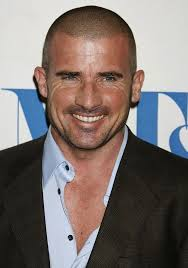
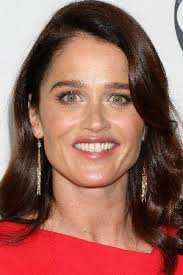
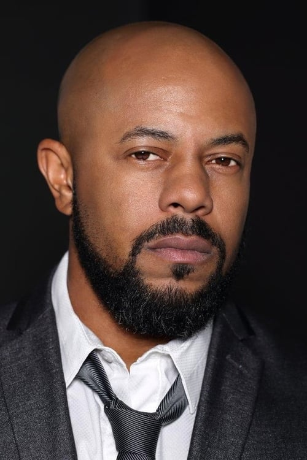

Wentworth Miller
52 años
2 de junio de 1972
Dominic Porcell
55 años
17 de febrero de 1970

Robin Tonney
52 años
19 de junio de 1972

Amaory Nolasco
54 años
24 de diciembre de 1970
Peter Stormare
71 años
27 de agosto de 1953
Robert Knepper
65 años
8 de julio de 1959
Rockmond Donbar
52 años
1 de enero de 1973

Wade Williams
63 años
24 de diciembre de 1961
Sarah Wayne Callies
47 años
1 de jonio de 1977
William Fichtner
68 años
27 de noviembre de 1956